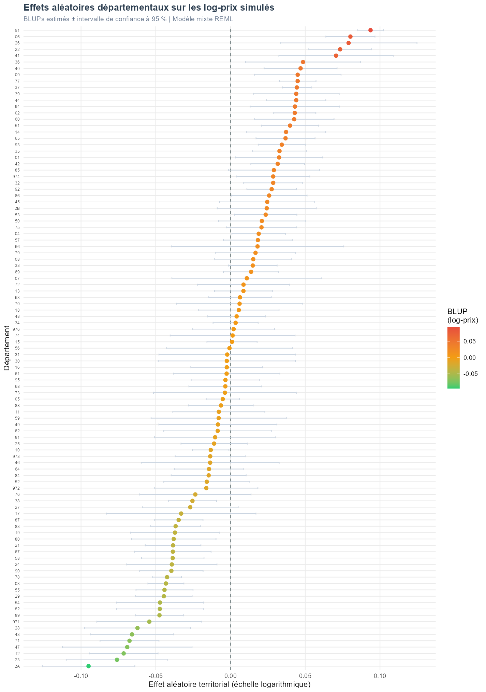
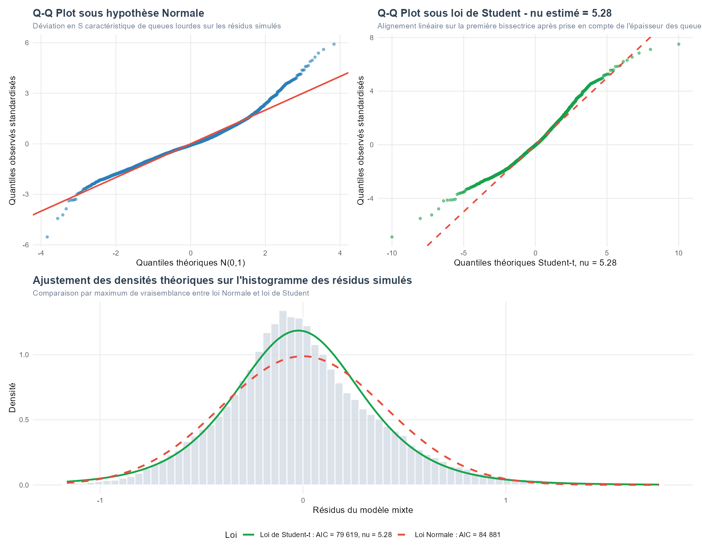
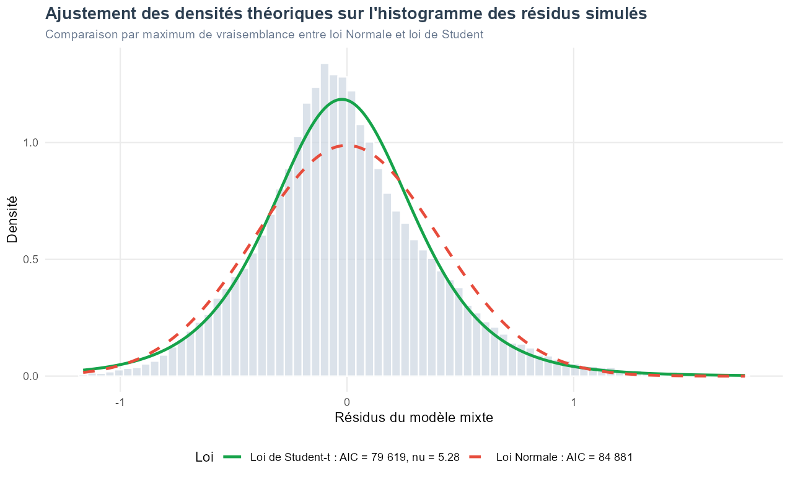
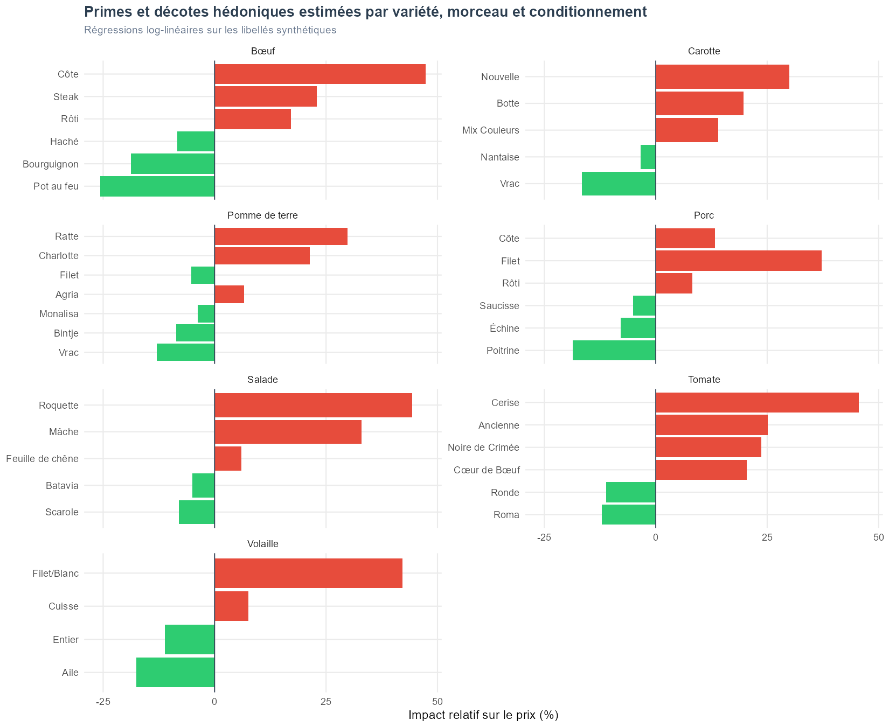
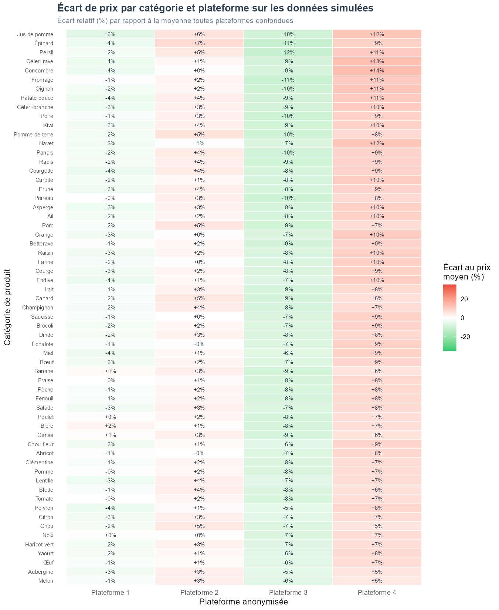

Synthèse interactive des disparités spatiales pures (Indice IPT), des déterminants structurels de prix (bio, formats, canaux) et du filtrage probabiliste non supervisé par mélange gaussien (GMM) sur 4 plateformes multi-canaux.
lme4
+9.4 % par rapport au conventionnel.-17.8 % (1-3 kg) et -27.5 % (> 3 kg).+4.6 %), P3 (-6.2 %), P4 (+10.8 %) vs P1.6.3512L'Indice de Prix Territorial (IPT) isole la composante géographique pure des prix en neutralisant l'effet du panier consommé, du label biologique, du conditionnement et du canal d'achat.

Classement complet des 101 départements métropolitains et ultra-marins selon leur BLUP départemental avec barres d'incertitude à 95%.
| Code | Nom du Territoire | Indice IPT (Base 1.00) | Écart Relatif | Interprétation |
|---|---|---|---|---|
| NAT | France Métropolitaine (Référence) | 1.000 |
+0.0 % | Niveau de Référence |
| 91 | Essonne | 1.098 |
+9.8 % | Significativement plus cher |
| 06 | Alpes-Maritimes | 1.084 |
+8.4 % | Significativement plus cher |
| 26 | Drôme | 1.082 |
+8.2 % | Significativement plus cher |
| 22 | Côtes-d'Armor | 1.076 |
+7.6 % | Significativement plus cher |
| 41 | Loir-et-Cher | 1.073 |
+7.3 % | Significativement plus cher |
| 36 | Indre | 1.050 |
+5.0 % | Significativement plus cher |
| 40 | Landes | 1.048 |
+4.8 % | Significativement plus cher |
| 09 | Ariège | 1.046 |
+4.6 % | Significativement plus cher |
| 77 | Seine-et-Marne | 1.046 |
+4.6 % | Significativement plus cher |
| 37 | Indre-et-Loire | 1.045 |
+4.5 % | Significativement plus cher |
| 39 | Jura | 1.045 |
+4.5 % | Significativement plus cher |
| 44 | Loire-Atlantique | 1.045 |
+4.5 % | Significativement plus cher |
| 94 | Val-de-Marne | 1.044 |
+4.4 % | Significativement plus cher |
| 02 | Aisne | 1.044 |
+4.4 % | Significativement plus cher |
| 60 | Oise | 1.044 |
+4.4 % | Significativement plus cher |
| 51 | Marne | 1.041 |
+4.1 % | Significativement plus cher |
| 14 | Calvados | 1.038 |
+3.8 % | Significativement plus cher |
| 65 | Hautes-Pyrénées | 1.037 |
+3.7 % | Significativement plus cher |
| 93 | Seine-Saint-Denis | 1.035 |
+3.5 % | Significativement plus cher |
| 35 | Ille-et-Vilaine | 1.033 |
+3.3 % | Significativement plus cher |
| 01 | Ain | 1.033 |
+3.3 % | Significativement plus cher |
| 42 | Loire | 1.032 |
+3.2 % | Significativement plus cher |
| 85 | Vendée | 1.029 |
+2.9 % | Légèrement plus cher |
| 974 | La Réunion | 1.029 |
+2.9 % | Significativement plus cher |
| 32 | Gers | 1.029 |
+2.9 % | Significativement plus cher |
| 92 | Hauts-de-Seine | 1.028 |
+2.8 % | Significativement plus cher |
| 86 | Vienne | 1.026 |
+2.6 % | Significativement plus cher |
| 45 | Loiret | 1.025 |
+2.5 % | Légèrement plus cher |
| 2B | Haute-Corse | 1.025 |
+2.5 % | Légèrement plus cher |
| 53 | Mayenne | 1.024 |
+2.4 % | Significativement plus cher |
| 50 | Manche | 1.021 |
+2.1 % | Légèrement plus cher |
| 75 | Paris | 1.021 |
+2.1 % | Légèrement plus cher |
| 04 | Alpes-de-Haute-Provence | 1.019 |
+1.9 % | Significativement plus cher |
| 57 | Moselle | 1.018 |
+1.8 % | Légèrement plus cher |
| 66 | Pyrénées-Orientales | 1.018 |
+1.8 % | Dans la moyenne nationale |
| 79 | Deux-Sèvres | 1.017 |
+1.7 % | Légèrement plus cher |
| 08 | Ardennes | 1.015 |
+1.5 % | Légèrement plus cher |
| 33 | Gironde | 1.015 |
+1.5 % | Légèrement plus cher |
| 69 | Rhône | 1.014 |
+1.4 % | Légèrement plus cher |
| 07 | Ardèche | 1.011 |
+1.1 % | Dans la moyenne nationale |
| 72 | Sarthe | 1.009 |
+0.9 % | Dans la moyenne nationale |
| 13 | Bouches-du-Rhône | 1.009 |
+0.9 % | Légèrement plus cher |
| 63 | Puy-de-Dôme | 1.006 |
+0.6 % | Dans la moyenne nationale |
| 70 | Haute-Saône | 1.006 |
+0.6 % | Dans la moyenne nationale |
| 18 | Cher | 1.006 |
+0.6 % | Dans la moyenne nationale |
| 48 | Lozère | 1.004 |
+0.4 % | Dans la moyenne nationale |
| 34 | Hérault | 1.003 |
+0.3 % | Dans la moyenne nationale |
| 976 | Mayotte | 1.002 |
+0.2 % | Dans la moyenne nationale |
| 74 | Haute-Savoie | 1.001 |
+0.1 % | Dans la moyenne nationale |
| 15 | Cantal | 1.001 |
+0.1 % | Dans la moyenne nationale |
| 56 | Morbihan | 0.999 |
-0.1 % | Dans la moyenne nationale |
| 31 | Haute-Garonne | 0.998 |
-0.2 % | Dans la moyenne nationale |
| 30 | Gard | 0.998 |
-0.2 % | Dans la moyenne nationale |
| 16 | Charente | 0.997 |
-0.3 % | Dans la moyenne nationale |
| 61 | Orne | 0.997 |
-0.3 % | Dans la moyenne nationale |
| 95 | Val-d'Oise | 0.997 |
-0.3 % | Dans la moyenne nationale |
| 68 | Haut-Rhin | 0.997 |
-0.3 % | Dans la moyenne nationale |
| 73 | Savoie | 0.996 |
-0.4 % | Dans la moyenne nationale |
| 05 | Hautes-Alpes | 0.995 |
-0.5 % | Légèrement moins cher |
| 88 | Vosges | 0.994 |
-0.6 % | Dans la moyenne nationale |
| 11 | Aude | 0.992 |
-0.8 % | Dans la moyenne nationale |
| 59 | Nord | 0.992 |
-0.8 % | Dans la moyenne nationale |
| 49 | Maine-et-Loire | 0.992 |
-0.8 % | Dans la moyenne nationale |
| 62 | Pas-de-Calais | 0.991 |
-0.9 % | Dans la moyenne nationale |
| 81 | Tarn | 0.990 |
-1.0 % | Dans la moyenne nationale |
| 25 | Doubs | 0.989 |
-1.1 % | Légèrement moins cher |
| 10 | Aube | 0.987 |
-1.3 % | Significativement moins cher |
| 973 | Guyane | 0.987 |
-1.3 % | Légèrement moins cher |
| 46 | Lot | 0.987 |
-1.3 % | Dans la moyenne nationale |
| 64 | Pyrénées-Atlantiques | 0.986 |
-1.4 % | Légèrement moins cher |
| 84 | Vaucluse | 0.985 |
-1.5 % | Légèrement moins cher |
| 52 | Haute-Marne | 0.984 |
-1.6 % | Légèrement moins cher |
| 972 | Martinique | 0.984 |
-1.6 % | Légèrement moins cher |
| 76 | Seine-Maritime | 0.977 |
-2.3 % | Légèrement moins cher |
| 38 | Isère | 0.975 |
-2.5 % | Significativement moins cher |
| 27 | Eure | 0.973 |
-2.7 % | Légèrement moins cher |
| 17 | Charente-Maritime | 0.968 |
-3.2 % | Légèrement moins cher |
| 87 | Haute-Vienne | 0.966 |
-3.4 % | Significativement moins cher |
| 83 | Var | 0.964 |
-3.6 % | Significativement moins cher |
| 19 | Corrèze | 0.964 |
-3.6 % | Significativement moins cher |
| 80 | Somme | 0.963 |
-3.7 % | Significativement moins cher |
| 21 | Côte-d'Or | 0.962 |
-3.8 % | Significativement moins cher |
| 67 | Bas-Rhin | 0.962 |
-3.8 % | Significativement moins cher |
| 58 | Nièvre | 0.962 |
-3.8 % | Significativement moins cher |
| 24 | Dordogne | 0.962 |
-3.8 % | Significativement moins cher |
| 90 | Territoire de Belfort | 0.961 |
-3.9 % | Significativement moins cher |
| 78 | Yvelines | 0.958 |
-4.2 % | Significativement moins cher |
| 03 | Allier | 0.958 |
-4.2 % | Significativement moins cher |
| 55 | Meuse | 0.957 |
-4.3 % | Significativement moins cher |
| 29 | Finistère | 0.956 |
-4.4 % | Significativement moins cher |
| 54 | Meurthe-et-Moselle | 0.954 |
-4.6 % | Significativement moins cher |
| 82 | Tarn-et-Garonne | 0.954 |
-4.6 % | Significativement moins cher |
| 89 | Yonne | 0.954 |
-4.6 % | Significativement moins cher |
| 971 | Guadeloupe | 0.947 |
-5.3 % | Significativement moins cher |
| 28 | Eure-et-Loir | 0.940 |
-6.0 % | Significativement moins cher |
| 43 | Haute-Loire | 0.936 |
-6.4 % | Significativement moins cher |
| 71 | Saône-et-Loire | 0.935 |
-6.5 % | Significativement moins cher |
| 47 | Lot-et-Garonne | 0.933 |
-6.7 % | Significativement moins cher |
| 12 | Aveyron | 0.931 |
-6.9 % | Significativement moins cher |
| 23 | Creuse | 0.927 |
-7.3 % | Significativement moins cher |
| 2A | Corse-du-Sud | 0.909 |
-9.1 % | Significativement moins cher |
Les distributions réelles des prix en circuits courts présentent des queues lourdes incompatibles avec l'hypothèse gaussienne stricte. L'ajustement par une loi de Student-t multivariée améliore significativement l'adéquation :
| Modèle | Degrés ν | Log-Vraisemblance | AIC | Verdict |
|---|---|---|---|---|
| Loi Normale | — | -42 438,3 |
84 880,7 |
Sous-estimation queues |
| Loi de Student-t | ν = 5,28 |
-39 806,6 |
79 619,2 |
ΔAIC = 5 261,5 |

Ajustement empirique vs densités théoriquesmclust
En vente directe et circuits courts, les saisies manuelles des producteurs comportent de multiples incohérences structurelles : prix saisis au colis ou à la caisse pour un prix au kilo, ou inversement prix à la pièce unitaire.
Pour éviter les seuils manuels arbitraires (ex: tronquer à 3 écarts-types), l'observatoire modélise la distribution du logarithme des prix par un mélange de K lois gaussiennes complété d'une composante uniforme de bruit (Classe 0). L'algorithme EM isole automatiquement le bruit de fond statistique.

Densité de distribution des prix nettoyés
Primes et décotes associées aux termes descriptifs extraits des libellés de vente.
Les séries mensuelles de prix sont traitées par décomposition STL (Seasonal and Trend decomposition using Loess) pour isoler la composante structurelle de l'inflation des fortes fluctuations saisonnières agricoles.

Dispersion des prix par canal et catégorie alimentaireLes indices de prix départementaux sont confrontés aux indicateurs territoriaux de l'INSEE pour tester 11 hypothèses de structuration spatiale des filières de circuits courts.
Pour tester l'ensemble des filtres interactifs (choix parmi les 61 produits, rayons FoodOn, seuils dynamiques TCL du théorème central limite et module de contrôle qualité), lancez le démonstrateur dynamique autonome :